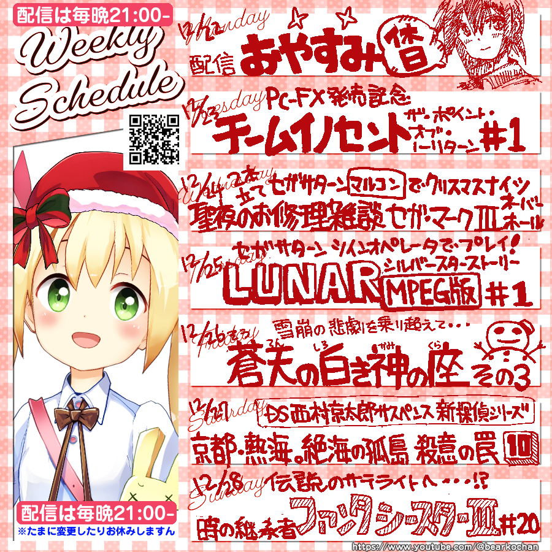

べあこ
🌍️アルゴル星系パルマ出身
👾レトロゲームが大好きなVTuberべあこです🐻🍯
🕹懐かしいゲームで遊んだり🎮 お修理したり🛠
📺そんな様子を配信したり🎥 呟いたり📝
🎥配信(ほぼ毎日夜9時) 🔰おゲームは万年初心者☺️✨

配信アーカイブ (最新20件)
突発配信 朝活! 3DSスペースハリアー1時間一本勝負!!
2026年03月15日(日) 09時13分 [アーカイブ]

ふと3DSのスペースハリアーが遊びたくなったので1時間を目安にゆるっと遊んでいきましょうねっ
野々村病院の人々(セガサターン版)で遊ぼう! PART.9
2026年03月14日(土) 21時01分 [アーカイブ]

複雑に絡み合う謎を徐々に解きほぐしつつあるものの、根が深くなかなか真相に迫れない〜! いえいえ、じっくり向き合ってやっていきましょう。JK桃子ちゃんとどうにか仲良くなりたいところ!
LUNAR シルバースターストーリー MPEG版 - ツインオペレータ搭載セガサターンで遊ぼう! (その9)
2026年03月12日(木) 21時00分 [アーカイブ]

偽ドラゴンマスターの討伐に無事成功!! 消えたランの村の歌姫を探しに行きましょう〜 大聖堂、魔法都市ヴェーンにヒントがあるかも!?
ソニック・ザ・ヘッジホッグで遊ぼう!! (その2)
2026年03月10日(火) 21時01分 [アーカイブ]

思った以上に「そっと移動」しないと難しい初代ソニック・ザ・ヘッジホッグ! カオスエメラルドの収集は一旦置いといて、まずは1つづつクリアしていきましょう〜 面セレ、練習ありありで! ラビリンスゾーン の3面から!!
時の継承者 ファンタシースターⅢで遊ぼう!! (第26回)
2026年03月09日(月) 21時01分 [アーカイブ]

シーレンの大活躍のお陰で話が一気に大進展!! 長きにわたる歴史に挑み、真実を解き明かそう〜!!
【追記 クリアできました🥰】続・ファミコン版沙羅曼蛇で遊ぼう!
2026年03月07日(土) 21時01分 [アーカイブ]

前回最終面(らしき場所)のモアイ軍団に砕け散った悔しさを胸に、今回こそはクリアするぞ〜!! という訳で気合入れていきまっしょい
蒼天の白き神の座 GREAT PEAK 〜 ダウラチェンリ峰を目指して (Attack 7)
2026年03月06日(金) 21時00分 [アーカイブ]

マヌーツェ初登頂を果たし意気軒昂たるべあこ登山隊。次なる挑戦は「ダウラチェンリ」。標高7636メートルの頂きを目指し、安全無事に高峰を目指しましょう〜。
ソニック・ザ・ヘッジホッグで遊ぼう!! (その1)
2026年03月04日(水) 21時01分 [アーカイブ]

メガドライブ大躍進のきっかけとなった不朽の名作「ソニック・ザ・ヘッジホッグ」。実はしっかりと遊んだことがなかったので、どーんと向き合っていきましょう。カオスエメラルドを集めるらしい…までは知っていますよ!?
野々村病院の人々(セガサターン版)で遊ぼう! PART.8
2026年03月02日(月) 21時00分 [アーカイブ]

徐々に明らかになる「野々村病院」の真実。地域医療を担う病院の裏側で想像以上の何かが!? 今夜も周辺各位との関係性を深めていき、謎を紐解いていきましょう〜。
時の継承者 ファンタシースターⅢで遊ぼう!! (第25回)
2026年03月01日(日) 21時01分 [アーカイブ]

長らく探し求めていた「サブマリンパーツ」を遂に入手! きっと砂漠の世界で使えるはず!! という訳でえんやこらーと向かってみましょう〜
ファミコン版沙羅曼蛇で遊ぼう!
2026年02月27日(金) 21時01分 [アーカイブ]

先日PSP版沙羅曼蛇を遊んだら、ふとファミコン版もやってみたくなってですね…… そんな訳で遊んでみましょう〜! ちょっと触ったらパワーアップゲージがあってびっくり。そのくらい何もかも忘れていますよっ
LUNAR シルバースターストーリー MPEG版 - ツインオペレータ搭載セガサターンで遊ぼう! (その8)
2026年02月26日(木) 21時00分 [アーカイブ]

交通の要所「ナンザスの砦」はなんざんす!? 荒くれ者達が集う拠点を乗り越えてランの村へ向かいましょう〜。おっとレベリングも忘れずにねっ
お久しぶりの沙羅曼蛇!! (PSP版)
2026年02月25日(水) 21時00分 [アーカイブ]

時々PSPは電源を入れた方がいいですよ!? という事でいろいろ動作確認していたらふと遊びたくなったので約1年ぶりに沙羅曼蛇ポータブル収録のPSP版沙羅曼蛇で遊びます🥰 いろいろ忘れているのでゆるりと思い出しつついきましょう〜
時の継承者 ファンタシースターⅢで遊ぼう!! (第24回)
2026年02月23日(月) 21時01分 [アーカイブ]

未知の大陸をじっくり探索。シーレンが飛んだり、潜ったり!? じっくりとレベリングしつつ進めていきましょう〜
野々村病院の人々(セガサターン版)で遊ぼう! PART.7
2026年02月21日(土) 21時01分 [アーカイブ]

セガサターンのADV名作「野々村病院の人々(セガサターン版)」で遊びましょう〜 やり直しプレイの結果、だいぶ明らかになってきた数々の不穏な現実。千里ちゃんといい雰囲気なのでこの調子で関係性を深めていきましょう〜
チームイノセント ザ・ポイント・オブ・ノーリターンで遊ぼう! (PART.7)
2026年02月20日(金) 21時01分 [アーカイブ]

いよいよ大詰め!? 残された時間は2時間弱。とても間に合わない気がしますが、MISSION3 「DEEP BLACK」の後半戦に挑みましょう〜 マッピングもほぼ完了してサクサク進行したいところ!
LUNAR シルバースターストーリー MPEG版 - ツインオペレータ搭載セガサターンで遊ぼう! (その7)
2026年02月18日(水) 21時02分 [アーカイブ]

魔法都市ヴェーンの探索はほぼ完了!? いよいよ砦に向かって出発だ〜! あれ、ミア様はご一緒ではないの!?
お久しぶりのMSX版沙羅曼蛇! 目指せ!! 3面突破〜!!
2026年02月16日(月) 21時00分 [アーカイブ]

兎にも角にも他機種版よりもだいぶ難しいMSX版 沙羅曼蛇。ブランクが長いのでじっくり慎重に勘を取り戻していきましょう〜。計画停電ステージに到着なるか!?
時の継承者 ファンタシースターⅢで遊ぼう!! (第23回)
2026年02月15日(日) 18時31分 [アーカイブ]

西側の橋を渡ってサテラに到着。城がルーンに襲われたらしくボロボロに。今夜は「栄光のグランディレクタ」の北の街を探索してこう〜!!
野々村病院の人々(セガサターン版)で遊ぼう! PART.6
2026年02月14日(土) 21時02分 [アーカイブ]

セガサターンのADV名作「野々村病院の人々(セガサターン版)」で遊びましょう〜 陰謀の罠に囚われ非業の最期を遂げた琢麻呂。今度こそは真相に迫りたい〜!!